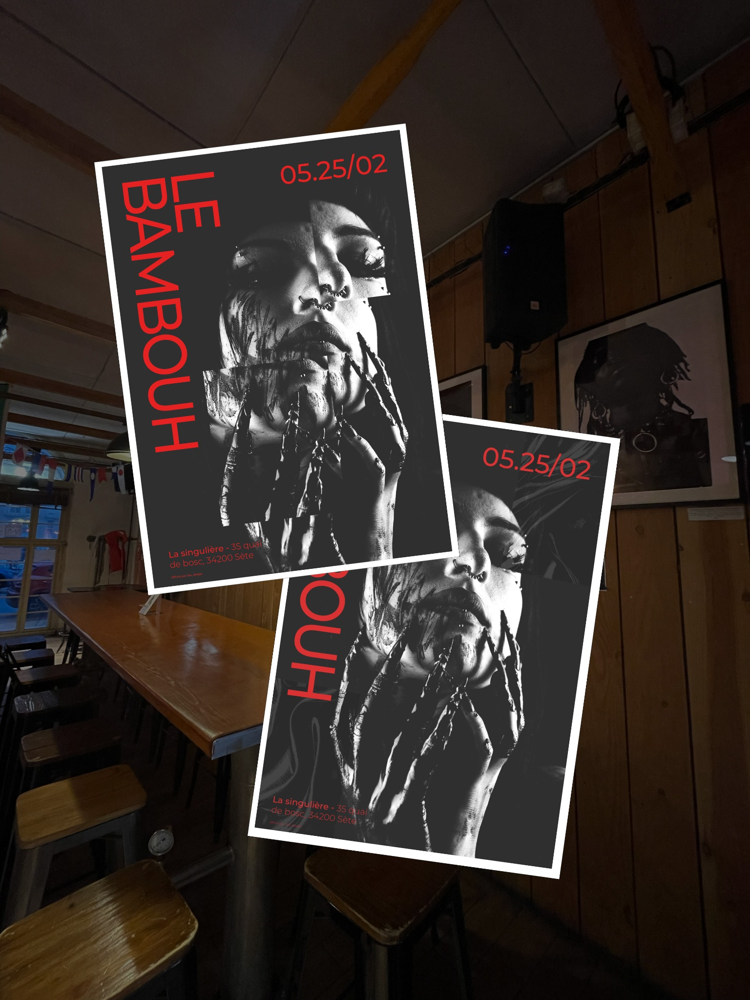
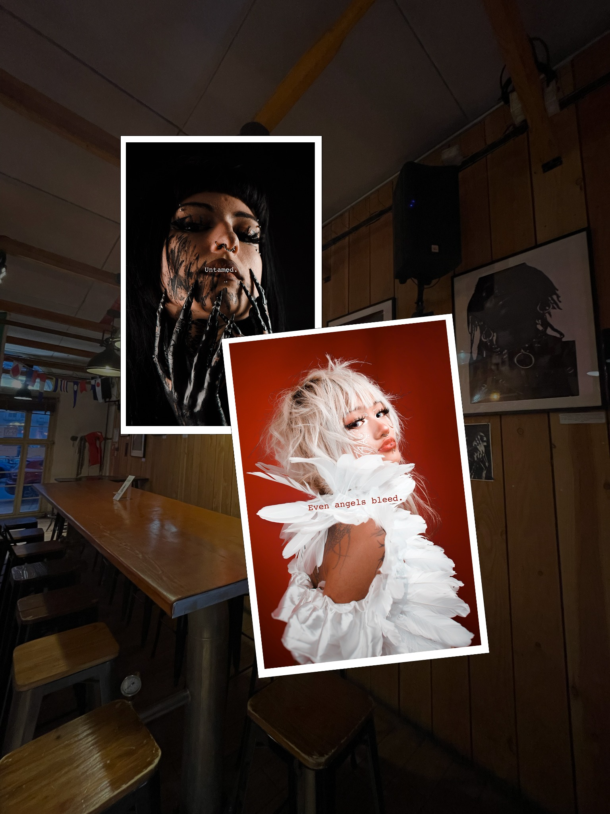

Graphisme · Affiche d’exposition
Affiche expo
Le Bambouh
Une affiche pour l’exposition solo de @le.bambouh à Sète, en février. Carte blanche totale pour traduire son univers photographique.

Le brief
Faire ressentir
sa patte.
Le Bambouh est photographe. Son univers, c’est la texture et le bizarre : la peau, le grain, la matière.
Il souhaitait une affiche qui ne soit pas simplement une jolie photo posée sur un support, mais qui fasse ressentir sa signature.
Après une affiche pour une exposition collective, ce projet solo m’a permis de partir directement de ses photographies, sans contrainte de groupe.
La création
Superposer.
Découper.
J’ai mêlé ses photographies à des textures que j’ai créées. Superposition, grain et découpe deviennent les outils d’une composition qui prolonge son univers.
L’objectif : que l’affiche ne soit pas seulement un support d’information, mais déjà un fragment de l’exposition.

Le résultat
Attirer de loin,
raconter de près.
Un visuel pensé pour attirer l’œil dans les rues de Sète et, de près, raconter le travail du photographe à travers la matière, les contrastes et les fragments d’image.